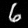
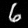
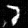
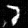

In this section, we learned about and implemented the basic sampling loop used by diffusion models. The first thing we implemented was the noising step used add noise to the images, which the diffusion model would then be able to remove. We also compared how iterative denoising did against one-step-denoising, as well as the gaussian blur we have been familiarized with throughout the course. Through this, we can noticeably see that iterative denoising performs better than the other options.


In addition to the previous part, we implemented a basic sampling loop to generate images from start. This is done by starting with pure noise, and denoising from there based on some prompt embedding (in this case "a high quality photo"). This is also done from i_start = 0.
From there, we improve the results by using the Classifier-Free Guidance technique (or CFG). This uses some unconditional prompt to improve image quality. We use this unconditional prompt as well as the old prompt to generate a new noise estimate as some combination between the model outputs for the prompts.
For this section, instead of generating from pure noise, we instead add varied amounts of noise to the image and denoise from there (resulting in a similar) but still quite different image).

We also repeat this for digital/hand drawn images, as the diffusion model is trained on natural images, so we get more "realistic" images back.
For this section, we do a similar process to before, but we add an additional mask. In this masked region, after every dnoising step, we force the image to have the same pixels as outside of the mask, thereby only allowing the diffusion model to generate inside the mask itself, while also inferring what the image looks like using the outside context.


This does a similar process to part 4, but instead of using the default "high quality image", we instead use a different prompt on which to condition the model output, to make the image look like the prompt but still resembling the original image in some way.


The general idea behind this section is that, we can produce two different noise estimates for the image. The first one is for the first prompt, on the regular image. Then we can also generate a noise estimate for the flipped image using a second prompt. Then we can take the average of these two estimates, to produce an image that looks somewhat like the first prompt normally, and somewhat like the second prompt when flipped.


This is simliar to a previous project we did, where you use the high frequencies of one image and the low frequencies of another image to produce a hybrid image that looks different depending on how far you are. For this, we use a similar idea to part 7 along with the previous idea, and generate two noise estimates for two different prompts. Then we use the highpass and lowpass filters (essentially just a gaussian kernel to blur, or get the difference between the original and blur), to produce a noise estimate, such that the denoised image is a hybrid image of both prompts.
For this part, we first implemented a basic UNet. I added a few extra skip connections to it in the 2nd half of the convblocks themselves to help improve performance. Where this differs from the true implementation of diffusion is that we estimate what the final image is, instead of the noise, by using the L2 distance between the estimated image and true image as the loss. We also held the noise amount constant, which was at sigma=0.5, and show that it doesn't generalize well to different values.


 

 

Now we begin to use some of the ideas we saw in part a. For time conditioning, we modify the model so that it takes the current timestep to condition the model output. This allows us to also do iterative denoising, so now we also estimate the amount of noise rather than the final image, which is also closer to how diffusion actually works. We also insert a fully connected block into the model to process the timstep data, and I've also added an extra skip connection here as well in the second linear layer.
Following the time conditioning, we also add class conditioning, where we feed in the class which we are training on (and during generation). The model handles it in a similar way, except we also one-hot encode the class into a vector, as well as have an unconditional vector which is just a vector of 0s. This is handled by masking the data with 0s. During the trainig process, we mask it 10% of the time. This also allows us to use CFG to generate the samples.